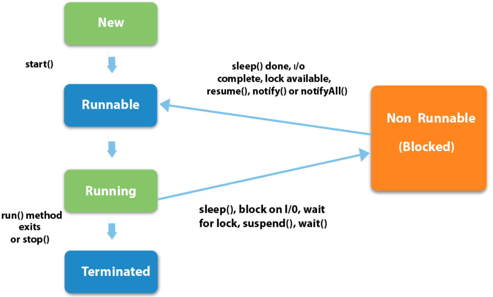
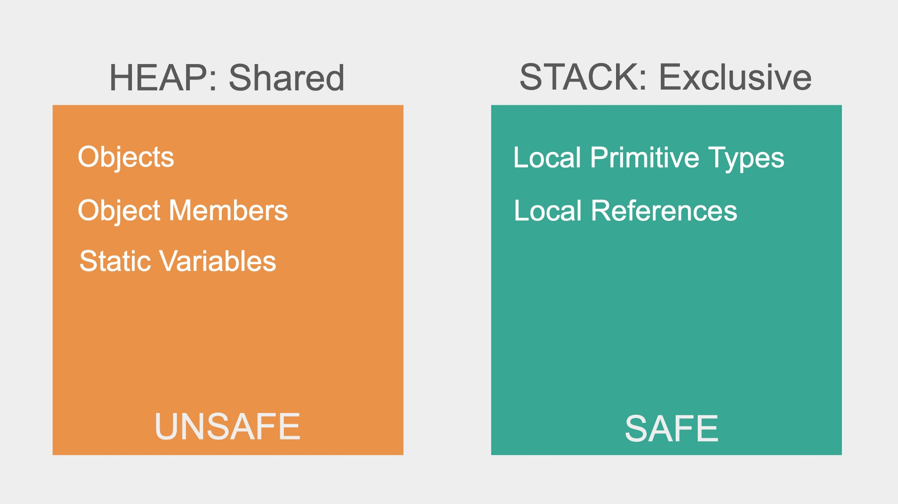

Java Multi-threading#
Java Thread class methods#
Thread.currentThread()#
The return type of this method is Thread, it returns a reference of currently executing thread (who touched this method). It does not raise any exception.
long getId()#
The thread ID is a positive long number generated when this thread was created.
The thread ID is unique and remains unchanged during its lifetime. When a thread is terminated, this thread ID may be reused.
int getPriority() and void setPriority()#
The priority of thread can either be assigned by the JVM or by the programmer explicitly while creating the thread.
The thread’s priority is in the range of 1 to 10. The default priority of a thread is 5.
Thread.State getState()#
void interrupt()#
An interrupt is an indication to a thread that it should stop what it is doing and do something else. It’s up to the programmer to decide exactly how a thread responds to an interrupt, but it is very common for the thread to terminate.
void join()#
This java thread join method puts the current thread on wait until the thread on which it’s called is dead. If the thread is interrupted, it throws InterruptedException.
If the referenced thread was already terminated or hasn’t been started, the call to join() method returns immediately.
void run()#
The run() method of a thread encapsulates the logic that should be run by a thread.
void setDaemon(boolean on)#
On the other hand, daemon threads are low-priority threads whose only role is to provide services to user threads. Since daemon threads are meant to serve user threads and are only needed while user threads are running, they won’t prevent the JVM from exiting once all user threads have finished their execution.
The method setDaemon() can only be called after the Thread object has been created and the thread has not been started. An attempt to call setDaemon() while a thread is running will throw an IllegalThreadStateException.
Thread.sleep(long millis)#
Thread.sleep() the method can be used to pause the execution of the current thread for a specified time in milliseconds. The argument value for milliseconds can’t be negative, else it throws IllegalArgumentException.
void start()#
When a program calls the start() method, a new thread is created, and then the run() method is executed.
We can’t call the start() method twice otherwise it will throw an IllegalStateException.
Thread.yield()#
yield() basically means that the thread is not doing anything particularly important and if any other threads or processes need to be run, they should run. Otherwise, the current thread will continue to run.
Use of yield method:
Whenever a thread calls
java.lang.Thread.yield()method, it gives hint to the thread scheduler that it is ready to pause its execution. The thread scheduler is free to ignore this hint.If any thread executes yield method, thread scheduler checks if there is any thread with same or high priority than this thread. If the processor finds any thread with higher or same priority then it will move the current thread to Ready/Runnable state and give processor to other thread and if not — current thread will keep executing.
Thread Lifecycle#
According to Sun microsystems, there are 4 states in the java thread life cycle.
New — A thread is in the “New” state, when an object of the thread class is instantiated but the “start” method is not invoked.
Runnable — When the “start” method has been invoked on the thread object. In this state, the thread is either waiting for the scheduler to pick it up for execution or it’s already running. Let us call the state when the thread is already picked for execution, the “running” state.
Non-Runnable(Blocked , Timed-Waiting) — When the thread is alive, i.e., the thread class object exists, but it cannot be picked by the scheduler for execution. It is temporarily inactive.
Terminated — When the thread completes execution of its “run” method. At this stage, the task of the thread is completed.

How does a thread enter the non-runnable state#
Forced reason
It is waiting for an I/O operation.
It is waiting on an object which is being held by another thread (Java associates “Monitor” to every object to enforce locking/synchronization).
Moved to sleep by scheduler based on the logic of resource sharing.
By choice - we can code inside “run” method or any method inside run which can deliberately give up CPU time.
sleep(long millis)thread gives up CPU time but keeps the lock.wait()orwait(long timeout)causes thread to give up CPU time as well as release any object lock. If used without timeout, it remains in non-runnable state endlessly unless we callnotfy()ornotifyAll()on it.yield()- This method is like a notification to the scheduler, that the thread is ready to give up execution. The scheduler then decides, based on other live threads and their priorities, if it wants to move the calling thread to runnable and give the CPU time to other threads, or keep running the existing thread.join()is called to pause the execution of the program until the thread calling the join method is terminated.
Thread Safey#
A code that is safe to call by multiple threads simultaneously is called thread-safe.
Critical Area#
A critical area is a section of code that is executed by multiple threads and where the sequence of execution for the threads makes a difference in the result of the concurrent execution of the critical area.
The critical area could appear only when one or more threads write to the shared resources. It is safe to let multiple threads read the same resources, as long as the resources do not change.
Race Conditions#
A race condition is a special condition that may occur inside a critical area.
When the result of multiple threads executing a critical area may differ depending on the sequence in which the threads execute, the critical area is said to contain a race condition.
Which resources are Thread-Safe#

Multithreading in Practice#
Running computation into a separate thread - spawning threads#
Using Thread class:
class MyClass extends Thread {
@Override
public void run() {
//...
}
}
Using Runnable interface:
new Thread(new Runnable() {
@Override
public void run() {
//…
}
});
Basic Thread synchronization#
Thread might “cache” some shared data and prevent scanning it when other threads modify it.
Use
volatilekeyword in the data field declaration to avoid this.
t1.join() returns to main thread only when t1 finishes meaning t1 blocks the main thread.
To fixing thread interleaving (on a modifiable data):
Make the modification operation “atomic” by making methods for each operation synchronized using
public synchronized void fn().Java
Objectimplements and intrinsic lock (mutex) if we usesynchronizedkeyword, a thread can only access the object if the lock is available.
Problem with synchronized methods:
total time taken = (no. of threads) * (unit work time)=> multithreading advantage is compromised.Independent methods still have to be executed sequentially (as the lock on object is no available while some thread accessing some orthogonal/independent method).
Solution:
synchronized block with different locks for each independent code block (use n - different objects to act as locks and pass them to synchronized of each block)
Default it is
synchronized(this)Bad practice to lock on actual working object (shared data), multiple of them might point to the same (java optimization). Better to create separate locks.
Thread Pools#
Way of managing lots of threads at the same time.
a collection of fixed number of workers
//no. of workers
int n = 10;
//defining thread pool with fixed size
ExecutorService executor = Executors.newFixedThreadPool(n)
//allotting tasks to the executor service
executor.submit(new myCustomThread1());
executor.submit(new myCustomThread2());
//...
//stop accepting new tasks and it will shutdown after all are completed.
executor.shutdown();
//waits only for specified time and then will return
Executor.awaitTermination(100, TimeOut.MILLIS);
Implementing thread-pool from scratch
CountDownLatch#
A thread safe class
//initialize with a count
CountDownLatch latch = new CountDownLatch(10);
//counting it down
latch.countDown();
//wait till it is 0
latch.await();
Concurrent (thread-safe) Data structures#
All classes in
java.util.cocurrent.*package are concurrent and thread-safe.No need to worry about thread synchronization at all.
BlockingQueue#
BlockingQueue<Integer> queue = new ArrayBlockingQueue<Integer>(size);
//patiently waits till queue-size < size
queue.put(someInt);
//patiently waits till an item is added (if queue is empty)
int val = queue.take();
Both the above methods makes it easy to implement producer-consumer problem.
Wait-Notify#
Wait#
Can only be called inside the synchronized block
Releases the lock on the object “immediately”, it is synchronized on and waits for notification/resumption.
Notify#
Can only be called inside the synchronized block.
Notifies the waiting thread. (does not release the lock until the block is over).
Notify-All#
Notifies the waiting thread. (does not release the lock until the block is over).
Re-Entrant Lock#
//lock interface
Lock lock = new ReentrantLock();
Bad way to use:
//works just like synchronized block
lock.lock();
//do something -> if this throws and exception lock is never released!
lock.unlock();
Better way:
lock.lock();
try {
//do something
} catch (Exception e) {
} finally {
lock.unlock();
}
Similar to wait/notify in the synchronized block:
Condition condition = lock.newCondition();
//similar to wait()
condition.await();
//notify
condition.signal();
//notifyAll
condition.signalAll();
We have to unlock before we can return to the waiting thread after calling signal()
Deadlock#
2 threads are waiting on each other to release a lock (free the shared resource) -> application frozen.
Simple way to reproduce: lock the different re-entrant locks in different order in each thread.
Deadlock solutions:
Lock your locks in the same order in every thread.
Use
tryLock()of the Lock interface.
//it returns immediately the status (if success)
boolean gotLock = lock.tryLock()
//we should unlock the locks if partially acquired
//either we should have all the locks (acquired in order)
//or none (so that other can acquire them)
Semaphores#
Semaphore sem = new Semaphore(noOfPermits);
//fair semaphore -> new Semaphore(permits, true);
//it will provide access to the first waiting thread on releasing.
//get current no. of available permits
sem.availablePermits();
//acquire -> decrements permits, waits if the permits == 0
sem.acquire();
//release -> increments permits.
sem.release();
Semaphore with one permit = Lock
Can be used to provide “limited-access” -> connection singleton managing connected users - max up to a limit (say 100).
Callable and Future#
To get return results in a scenario of multiple threads in a thread pool.
Callable - Similar to Runnable but its thread method returns something (unlike Runnable’s void run() method).
// anonymous implementation to return integer
executor.submit(
//anonymous class implementing Callable<T> interface
new Callable<Integer>() {
public Integer call() {
//do something and return an int
}
}
);
Future - Very useful for thread execution info/results
//executor.submit(..) return a Future<T> instance
Future<Integer> future = executor.submit(…);
//get returned value
future.get();
//get() will block until the thread associated with the future has returned/executed.
Interrupts#
t1.interrupt()
//doesn't stop the thread -> there is a stop() method but it is deprecated.
//it just sets an interrupted flag and continues with the normal execution.
//we cause Thread.currentThread() instead of explicitly defining a thread
t1.isInterrupted()
//catching InterruptedException will catch it if the flag is set.